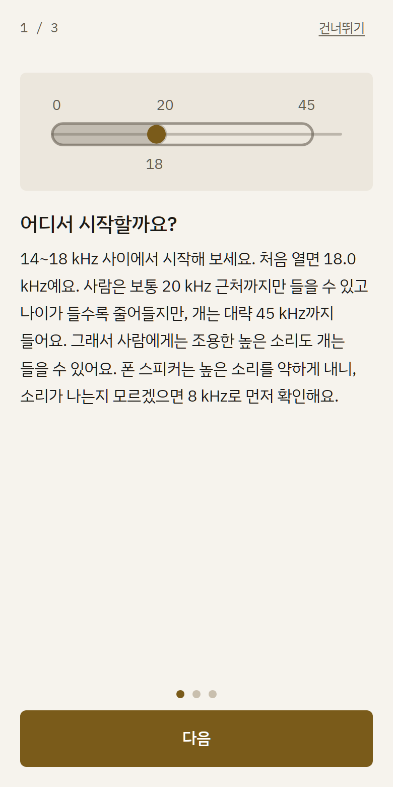
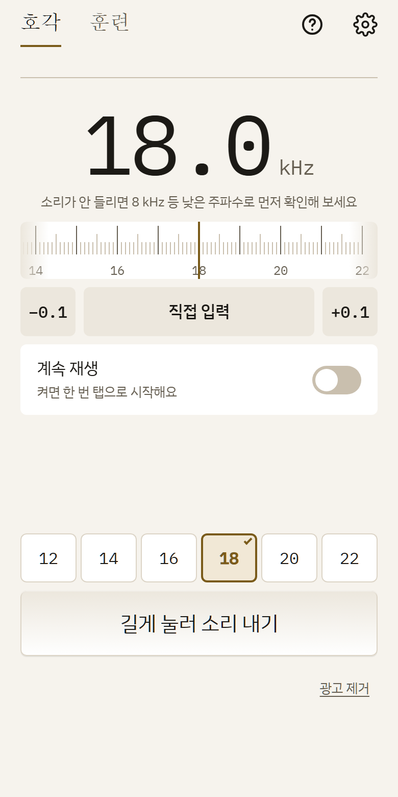
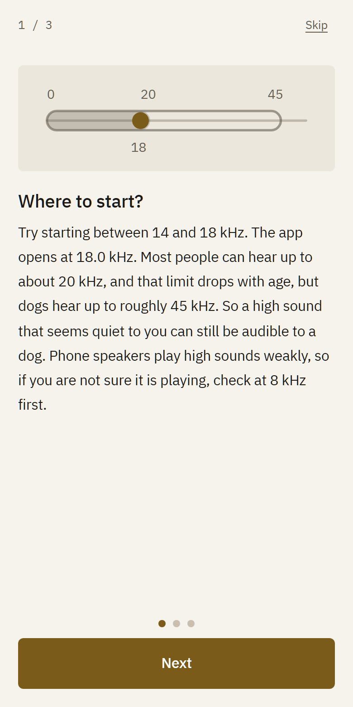
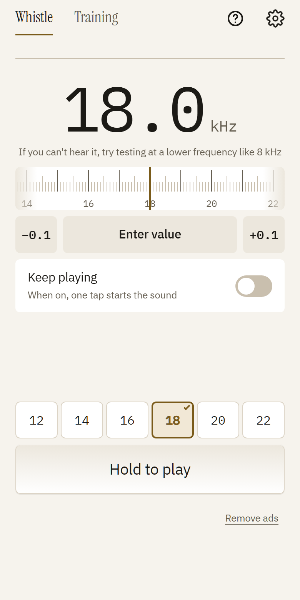

반려견 호각 사용법
이 앱은 1~22 kHz 사이의 높은 소리를 내는 호각이에요. 소리를 어떻게 고르고, 어떻게 훈련에 쓰는지 세 가지로 설명해요.
1. 어디서 시작하나요
14~18 kHz 사이에서 시작해 보세요. 앱을 처음 열면 18.0 kHz로 맞춰져 있어요.
사람이 들을 수 있는 소리는 보통 20 kHz 근처까지이고, 높은 소리는 나이가 들수록 들리지 않게 돼요. 개는 대략 45 kHz까지 들을 수 있어요(개마다 달라요). 그래서 사람 귀에는 작게 들리거나 안 들리는 높은 소리도 개는 들을 수 있어요.
폰 스피커는 높은 소리를 약하게 내거나 못 낼 수 있어요. 소리가 나는지 모르겠으면 낮은 주파수로 먼저 확인한 뒤 올려 보세요.
2. 주파수는 왜 바꾸나요
개마다 반응이 달라서 정답 값이 하나가 아니에요. 같은 소리에 귀를 쫑긋하는 개도 있고, 못 알아채는 개도 있어요.
소리를 짧게 내고 개의 반응(귀를 돌리거나 고개를 갸웃하는 것 등)을 보면서 −0.1, +0.1 버튼이나 눈금자로 조금씩 올리고 내려 보세요. 반응이 가장 뚜렷한 값을 찾으면 그 값을 정해 두고 계속 쓰면 돼요.
3. 훈련은 이렇게 해요
1. 소리를 내요. 2. 소리를 낸 바로 뒤에 간식이나 칭찬을 줘요. 시간 차가 생기면 개가 둘을 연결하지 못해요.
3. 짧게 여러 번 반복해요. 개가 지루해하거나 지치기 전에 끝내요.
4. 훈련 탭에서 신호(예: 짧게 3번)를 만들어 저장하면 같은 소리를 매번 똑같이 낼 수 있어요.
주의
- 참고용이에요. 개의 반응은 다를 수 있고, 효과를 보장하지 않아요.
- 사람이나 반려동물의 귀 가까이에 대고 소리 내지 마세요.
- 큰 소리로 오래 틀지 마세요. 소리로 개를 겁주거나 벌주거나 괴롭히는 데 쓰지 마세요. 개가 피하거나 불편해하면 즉시 멈추세요.
- 블루투스 이어폰으로 연결되어 있으면 귀 가까이에서 크게 들릴 수 있어요.
앱 화면


출처
아래 자료를 바탕으로 했어요.
- Wikipedia, Hearing range (사람 약 20 kHz, 개 약 45 kHz까지, 나이에 따라 줄어듦)
- AVSAB, Humane Dog Training Position Statement (보상 기반 훈련 권고)
- AKC, Clicker Training: Mark & Reward (신호 다음에 바로 보상)
How to use Dog Whistle
This app plays a high-pitched whistle tone between 1 and 22 kHz. Here is how to pick a sound and how to use it in training, in three parts.
1. Where to start
Try starting between 14 and 18 kHz. The app opens at 18.0 kHz.
People can usually hear up to about 20 kHz, and high sounds become harder to hear with age. Dogs can hear up to roughly 45 kHz (it varies by dog). So a high sound that seems quiet to you can still be audible to a dog.
Phone speakers may play high sounds weakly or not at all. If you are not sure it is playing, check at a lower frequency first, then raise it.
2. Why change the frequency
Every dog reacts differently, so there is no single right value. One dog perks up at a sound and another does not notice it.
Play the sound briefly, watch for a reaction (an ear turn, a head tilt), and nudge the value with the -0.1 and +0.1 buttons or the ruler. When you find the value with the clearest reaction, set it and keep using it.
3. How to train
1. Play the sound. 2. Give a treat or praise right after it. If there is a gap, your dog cannot link the two.
3. Repeat in short rounds. Stop before your dog gets bored or tired.
4. On the Training tab, create and save a signal (for example, short x3) so the sound is the same every time.
Cautions
- For reference only. A dog may react differently, and no effect is guaranteed.
- Don't play it close to a person's or pet's ear.
- Don't play it loud or for long. Never use the sound to scare, punish, or torment a dog. Stop if your dog avoids it or seems uncomfortable.
- With Bluetooth earbuds connected, the sound can be loud close to your ear.
In the app


Sources
Based on the sources below.
- Wikipedia, Hearing range (people about 20 kHz, dogs about 45 kHz, shrinks with age)
- AVSAB, Humane Dog Training Position Statement (reward-based training)
- AKC, Clicker Training: Mark & Reward (reward right after the marker)